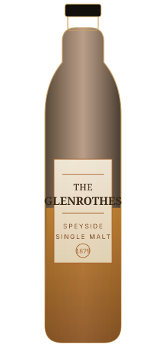

The Founder's Reserve
Bright orchard fruit and soft vanilla oak, finished with a whisper of ginger spice. The everyday introduction to the house style.
Orchard FruitVanillaGinger
This site discusses alcoholic beverages. Please confirm you are of legal drinking age in your country of residence to continue.
Since 1879, The Glenrothes has drawn soft spring water from the hills above the Burn of Rothes, filled sherry-seasoned oak, and left the rest to time.

Nothing here is rushed. Every choice at the distillery is made in favour of character over convenience.
Drawn from springs in the hills above Rothes, filtered slowly through peat and rock long before it ever reaches a still.
First-fill and refill European and American oak, seasoned with oloroso sherry, chosen cask by cask by our own coopers.
Warehoused on earthen floors where temperature barely moves, letting spirit and wood find each other without hurry.
The Glenrothes was founded on the banks of the Burn of Rothes, in the heart of Speyside — the small stretch of northern Scotland responsible for more of the world's whisky than any other region its size.
The site was chosen for one reason: the water. Everything since has been built around protecting it.

Each release is built around fruit, spice, and the quiet richness that only comes from sherry oak.
Bright orchard fruit and soft vanilla oak, finished with a whisper of ginger spice. The everyday introduction to the house style.
Dark stone fruit, cinnamon, and polished mahogany from decades in first-fill oloroso casks. Rich, round, and unhurried.
A rare, small-batch release: dried fig, dark chocolate, and antique oak. Bottled only when the cask says it is ready.
Tastings, warehouse tours, and a dram by the still — book a visit to where it all begins.
Plan Your Visit